В этом уроке будет рассмотрен простой и быстрый способ моделирования бриллианта в Blender. Для работы потребуется стандартный пакет Blender, а так же два изображения бриллианта: вид сверху и сбоку.
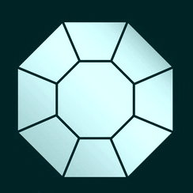
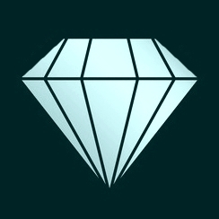
1. Настройка сцены
1.1 Запускаем Blender. Выделяем все стандартные объекты в сцене двойным нажатием клавиши «А» и удаляем их («Х», «Enter»).
1.2 Переходим на вид сверху («7») и отключаем перспективу («5»).
1.3 Клавишей «N» вызываем информационное Окно. Открываем вкладку «Background Images» и добавляем первое изображение бриллианта (вид сверху) через «Add Image»=> «Open».
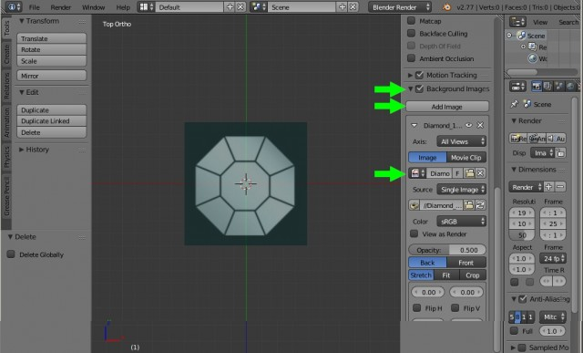
1.4 Закрепляем данную картинку только для вида сверху. Для этого нажимаем на вкладку «Axis»=>«All Views» и выбираем «Top». Теперь это изображение будет видно только при виде сверху.
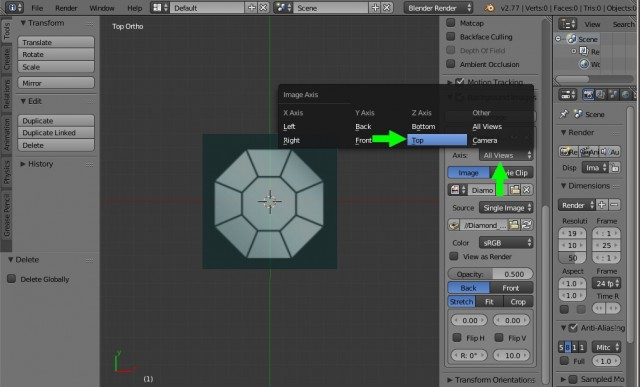
1.5 Переходим на вид спереди («1»). Снова нажимаем на «Add Image» и в появившейся новой вкладке загружаем второе изображение аналогичным образом через «Open». Только теперь во вкладке «Axis»=>«All Views» выбираем «Front» (Вид спереди).
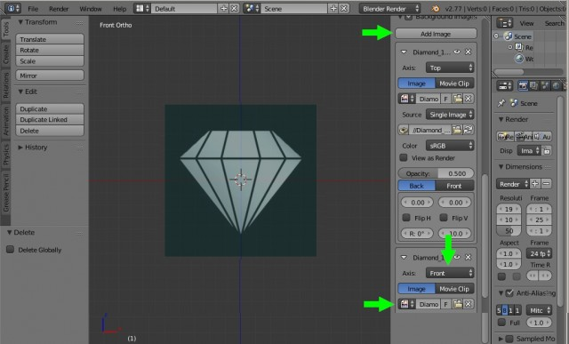
2. Моделирование бриллианта.
2.1 Переходим на вид сверху («7»). Вставляем плоскость: «Shift+A»=>«Plane». И клавишей «S» увеличиваем плоскость до крайних линий восьмиугольника бриллианта, клавишей «G» выравниваем нашу плоскость.
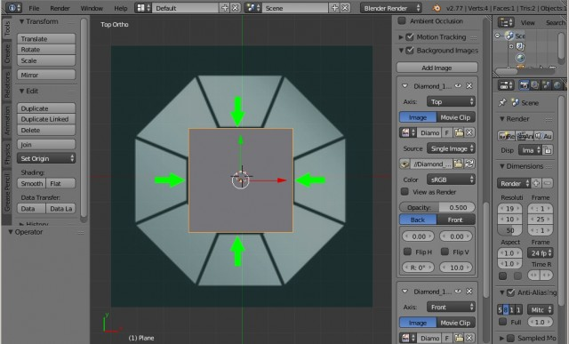
2.2 Переходим в режим редактирования «Tab» и выделяем все четыре вершины плоскости. Затем комбинацией клавиш «Ctr+Shift+B» полученный восьмиугольник равняем по углам верхушки бриллианта.
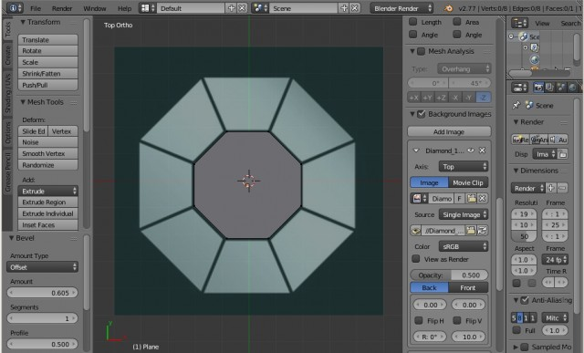
2.3 Выделяем все вершины («А»), для экструдирования (выдавливания) нажимаем клавишу «Е» и «Esc». Затем выделенные точки увеличиваем до крайних границ бриллианта клавишей «S».
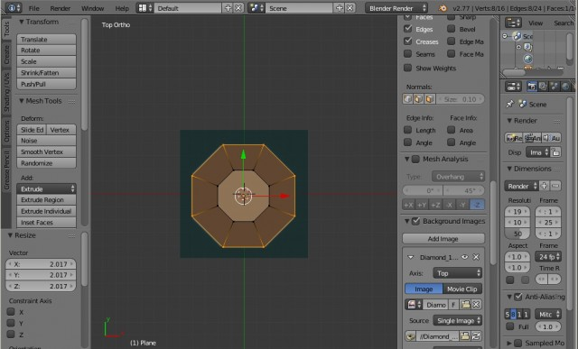
2.4 Отключаем режим редактирования «Tab». Переходим на вид спереди «1» и поднимаем нашу плоскость до вершины бриллианта. Затем включаем режим редактирования «Tab» и опускаем боковые точки плоскости до широких граней бриллианта.
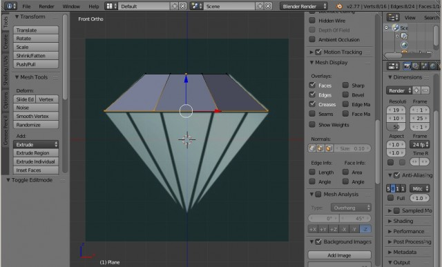
2.5 Теперь экструдируем «Е» до самого низа бриллианта и нажимаем сочетание клавиш «Alt+M»=>«At Center». В итоге нижние точки соединяться в центре.
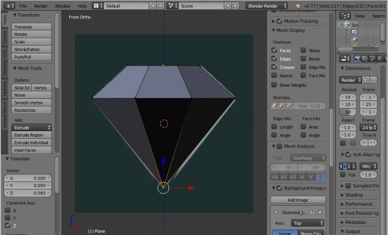
2.6 Сейчас у нас полигоны обращены внутрь объекта и при рендеринге не будут видны. Чтобы это исправить, выделим все вершины, двойным нажатием клавиши «A», затем на панели справа в разделе «Shading/UVs» нажмем на кнопку «Recalculate».
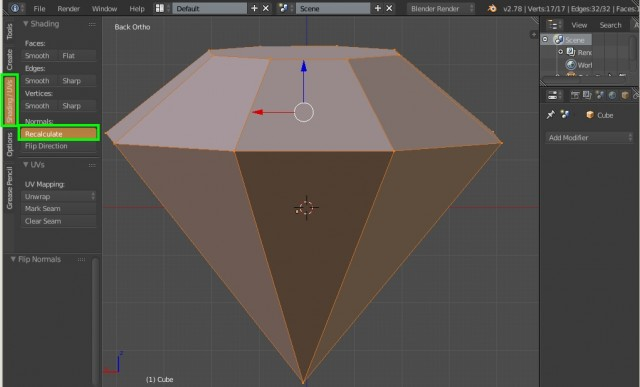
3. Добавление фасок
Так как все реальные объекты имеют фаски, то добавим их и для бриллианта.
3.1 Нажимаем клавишу «W» и в появившемся списке выбираем «Bevel». Значения «Amount», отвечающее за ширину фасок, задаём равное 0.05, а количество сегментов «Segments» устанавливаем равное 2.
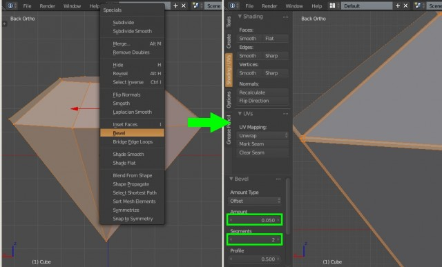
3.3 Выходим из режима редактирования «Tab» и добавляем объекту сглаживание сочетанием клавиш «Ctrl+1». При этом клавишу с цифрой «1» необходимо нажать на верхнем ряде клавиатуры.
В итоге получаем сглаженный бриллиант.
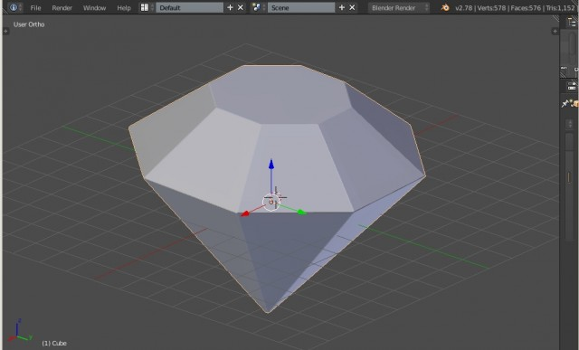
На этом наш несложный урок для новичков по моделированию бриллианта в Blender окончен.